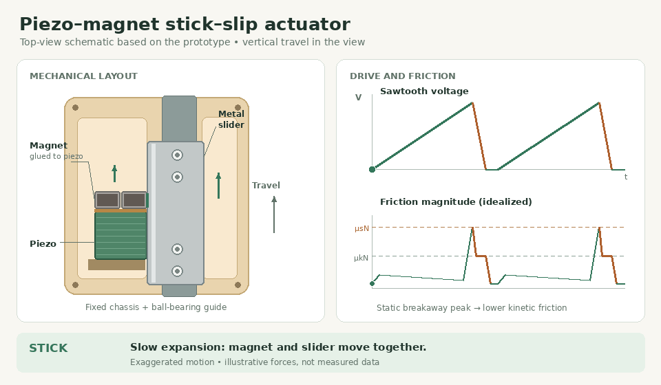

01 / Motivation
Can a vibrating element produce linear travel?
I wanted to build a linear actuator without relying on a conventional rotating motor, gears or a lead screw. A piezoelectric element can deform in response to applied voltage, but the displacement in any individual cycle is small. The idea was to exploit the difference between sticking and slipping during asymmetric motion, so successive cycles accumulate into useful translation.
I assembled a bench prototype using a piezoelectric actuator, a DreamSourceLab portable oscilloscope/waveform source, a TDA7297 audio amplifier, magnets and a ball-bearing slider. The experiment connects electrical signal generation, power amplification and mechanical friction in one physical system.
02 / Hardware architecture
From a voltage waveform to mechanical motion.
Functional block diagram based on the prototype description, not a circuit schematic or dimensional drawing.
The amplifier was originally designed for audio applications; here I repurposed it for actuator excitation. A piezoelectric element presents a predominantly capacitive load, so actual waveform amplitude, distortion and amplifier stability depend on the load and frequency. The measured electrical limits of this particular assembly are not documented in the available footage.
03 / Mechanism
Vertical piezo motion, asymmetric friction.
In my prototype, the magnet is glued directly to the piezoelectric element beside the metal ball-bearing slider. The sawtooth drive causes the piezo and bonded magnet to move vertically along the slider's direction of travel (as seen in the top view). Magnetic attraction provides a normal load at the interacting surfaces; the guided slider is moved through friction rather than by a separate drive rod.
During the slow part of the waveform, static friction can keep the magnet and slider moving together. During the sharp return, the required friction can reach the static breakaway limit. Once sliding begins, kinetic friction is typically smaller than the maximum static friction, so the magnet returns while the slider retains most of its displacement. Repeated cycles can accumulate net travel.

The maximum static friction is approximately μsN, while sliding friction is approximately μkN in a simple Coulomb friction model, with μk < μs. Static friction is not always equal to its maximum; the peak represents breakaway. Actual forces depend on the magnetic preload, contact surfaces, inertia and drive waveform.
04 / Experimental footage
Eight views of the prototype.
Original videos from February 18, 2025, arranged in recording order. They document the hardware, waveform controls and motion tests. Each video has its own playback controls.
Clip 01 · 0:19
Actuator close-up
The compact piezo-driven slider during an extended bench test.
Open video ↗Clip 02 · 0:03
Complete bench setup
Hand-held inspection of the slider with the waveform instrument and powered amplifier visible.
Open video ↗Clip 03 · 0:07
Slider and drive electronics
A wider view of the wired actuator followed by a close-up of the slider.
Open video ↗Clip 04 · 0:01
Amplifier close-up
A brief view of the powered audio-amplifier module and its wiring.
Open video ↗Clip 05 · 0:04
Sawtooth drive setup
The waveform-generator display, amplifier and wired actuator in the same frame.
Open video ↗Clip 06 · 0:14
Drive adjustment and motion test
The clip moves from the instrument controls to the actuator as it is tested.
Open video ↗Clip 07 · 0:02
Waveform adjustment
A short view of the instrument being adjusted with the actuator connected.
Open video ↗Clip 08 · 0:29
Extended actuator demonstration
The longest clip starts at the waveform controls and follows the compact slider in close-up.
Open video ↗The videos are encoded for browser playback; Full clip durations are retained; audio has been removed for privacy.
05 / Three-channel DAC
A DAC for future 3D actuation.
I designed this three-channel digital-to-analog converter (DAC) module as a signal source for future 3D piezoelectric actuation. It takes inputs through pin headers and routes its analog outputs through coaxial connections.
PCB design · February 2025
Three-channel DAC board
The 3D model rotates from an edge view of the pin headers to an overhead view of the three channel layouts.
Open video ↗06 / Evaluation & next steps
What I would measure next.
The prototype explores the feasibility of translating an electrically driven piezo motion into linear movement without a rotating drive. To characterize it as an actuator, the next step would be a controlled set of measurements rather than just visual demonstrations.
These measurements would help separate the effects of waveform asymmetry, inertia, friction, magnetic coupling and amplifier bandwidth. No calibrated performance values are claimed here because no measurement records were supplied.
Project description: my own account and original experimental footage. The principle diagrams are explanatory illustrations. Exact component models beyond those named above and circuit details are not specified.
← Back to selected projects · Explore the FPGA vision project ↗